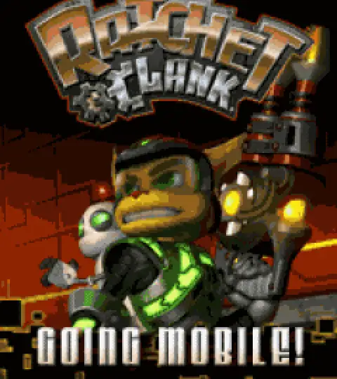
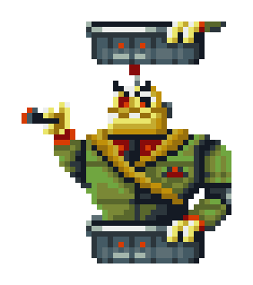
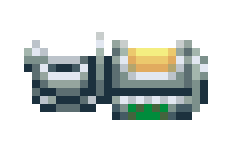
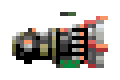
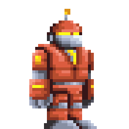

PRESERVEDPRÉSERVÉ
Going Mobile
The very first Ratchet & Clank game on a phone, and the only one in 2D: the duo is digitised into a Secret Agent Clank vid-comic and must rebuild the MCGuFIN to get back to the real world. It won Best Action Game at the 2005 Mobile Entertainment Awards.Le tout premier Ratchet & Clank sur téléphone, et le seul en 2D : le duo est numérisé dans une vid-comic de l'Agent secret Clank et doit reconstituer le MCGuFIN pour revenir dans le monde réel. Il a reçu le prix du meilleur jeu d'action aux Mobile Entertainment Awards 2005.
StatusStatut
ArchivedArchivé
FormatFormat
.jar (J2ME)
Plays todayJouable aujourd’hui
Via a J2ME emulatorVia un émulateur J2ME



